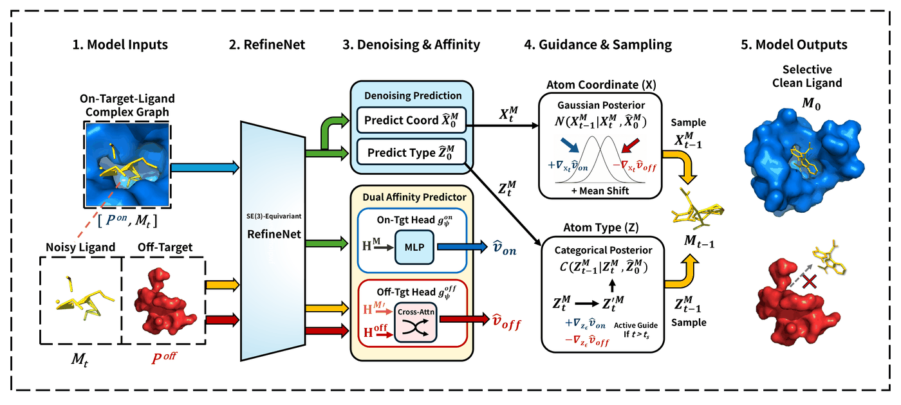

I work on AI-driven drug discovery in Yonsei’s Data Engineering Lab with Prof. Sanghyun Park. I develop diffusion models for selective 3D molecular design and physics-informed scoring functions for interpretable protein–ligand binding affinity prediction.
TheSelective generates ligands for target binding and off-target avoidance.
About
With a dual undergraduate background in Computer Engineering and Healthcare Convergence, I aim to bridge the gap between deep learning theory and real-world drug discovery challenges.
Structure-Based Drug Design, Protein-Ligand Interaction, Diffusion Models, 3D Molecular Generation, Binding Affinity Prediction, Selective Drug Design, Equivariant GNNs.
Research
Selective Molecular Generation
Making off-target avoidance an explicit generative objective. Dual-affinity guidance injects attractive on-target and repulsive off-target gradients into the denoising process, steering both atom types and coordinates toward a maximized affinity gap.
Diffusion Guidance, Selectivity, SBDD
Protein–Ligand Binding Affinity
Estimating affinity without a docked complex. Cross-attention over independently encoded protein and ligand embeddings bypasses 3D spatial alignment, making off-target affinity differentiable at every step of the reverse diffusion trajectory.
Cross-Attention, Alignment-Free, Docking Scores
3D Molecular Representation
SE(3)-equivariant architectures that keep molecular geometry consistent under rotation and translation, and diffusion formulations that generate atom types, bonds, and interatomic distances jointly rather than in sequence.
SE(3)-Equivariance, EGNN, Distance Matrix
Education
Integrated M.S./Ph.D. in Computer Science
Yonsei University, Sinchon Campus
AI-driven Drug Discovery, Data Engineering Lab (advisor: Prof. Sanghyun Park) Graduate GPA: 4.2/4.3
Current 2025.03 — 2030.02 (expected)
B.E. in Computer Engineering
Yonsei University, Mirae Campus
Double Major: Healthcare Convergence Total GPA: 3.92/4.3, Major GPA: 3.93/4.3
Graduated 2019.03 — 2025.02
Publications
First-Author
Physicochemical Interaction Energy-Driven Diffusion for Docking-Consistent Structure-Based 3D Molecular Generation
Hyoungjoon Park, Seungyeon Choi, Hwanhee Kim, Seungyong Lee, Yoonju Kim, Taeil Noh, Minjae Lee, Sanghyun Park
Submitted to Journal of Cheminformatics (Collection: AI and XAI in Drug Discovery), October 2026
ChIEDiff adds chemistry-gated intermolecular energy terms (steric repulsion, plus hydrophobic and hydrogen-bond attraction restricted to chemically compatible atom pairs) at the predicted clean ligand pose during diffusion training, and keeps affinity guidance at sampling. Generated poses are evaluated directly on CrossDocked2020, alongside redocked scores, redocking displacement, interaction profiles, and physical-validity checks.
TheSelective: Dual Affinity-Guided Diffusion for Selective Molecular Generation
Hyoungjoon Park, Hwanhee Kim, Seungyeon Choi, Seungyong Lee, Yoonju Kim, Sanghyun Park
Pacific-Asia Conference on Knowledge Discovery and Data Mining (PAKDD), LNAI 16598, pp. 16–27, Springer, 2026
Dual-affinity guided diffusion that maximizes the on-target/off-target binding gap without requiring off-target docked structures. Evaluated on CrossDocked2020 against TargetDiff, KGDiff, and BInD.
My contribution. Defined the selectivity question, designed and implemented the model, and evaluated it against baseline methods.

TheSelective encodes the on-target complex, the noisy ligand, and the off-target protein through a shared SE(3)-equivariant backbone, then guides reverse diffusion with an attractive on-target and a repulsive off-target affinity gradient.Full results — CrossDocked2020 (Avg. / Med.)
Set
Model
On-Dock ↓
Off-Dock ↑
Selectivity ↑
QED ↑
SA ↑
Success ↑
TM-High
TargetDiff
−7.583 / −7.577
−7.405 / −7.391
0.178 / 0.165
0.469
0.585
91.0%
BInD
−7.510 / −7.569
−7.391 / −7.422
0.120 / 0.062
0.505
0.658
88.1%
KGDiff
−9.290 / −9.309
−8.446 / −8.466
0.844 / 0.727
0.527
0.548
85.6%
TheSelective
−9.969 / −9.958
−8.994 / −9.001
0.975 / 0.923
0.495
0.534
50.2%
TM-Low
TargetDiff
−7.566 / −7.552
−5.567 / −5.564
1.999 / 1.993
0.467
0.583
91.9%
BInD
−7.536 / −7.589
−5.608 / −5.643
1.928 / 1.934
0.502
0.654
89.1%
KGDiff
−9.343 / −9.366
−6.345 / −6.393
2.998 / 2.980
0.528
0.546
85.6%
TheSelective
−9.954 / −9.909
−6.591 / −6.588
3.363 / 3.259
0.511
0.557
56.9%
Selectivity = Off-Dock − On-Dock (kcal/mol); higher is better. QED / SA reported as Avg.
Success = fraction of molecules validly reconstructed by Open Babel and successfully docked against both proteins. The selectivity gain comes at a cost in reconstruction validity; recovering it is ongoing work.
거리 정보를 통합한 분자 그래프 생성을 위한 Diffusion 모델
Hyoungjoon Park, Seungyeon Choi, Hwanhee Kim, Seungyong Lee, Yoonju Kim, Sanghyun Park
Korea Computer Congress (KCC), Jeju, Korea, pp. 1392–1394, 2025
Published
Domestic conference (Korean)
Co-Authored
QEPPI와 생화학적 특성을 이용한 펩타이드의 약물 디자인 당위성 분류 모델
Tae-il Noh, Seungyeon Choi, Hwanhee Kim, Hyoungjoon Park, Seungyong Lee, Yoonju Kim, Seulgi Baek, Minjae Lee, Sanghyun Park
Korea Computer Congress (KCC), pp. 852–854, 2026
Published
Domestic conference (Korean)
TheProtein: Evolutionarily Informed Graph-Surface Protein Representation
Seungyong Lee, Seungyeon Choi, Hwanhee Kim, Hyoungjoon Park, Yoonju Kim, Hyunseo Yang, Sanghyun Park
Workshops of the IEEE International Conference on Bioinformatics and Biomedicine (BIBM), pp. 6929–6935, 2025
Ki Hoon Kwak, SangPil Cho, HoJun Shin, Hyoungjoon Park, GwangHyeon Yun, Young-Rae Cho
Korea Computer Congress (KCC), Jeju, Korea, pp. 969–971, 2024
Published
Domestic conference (Korean)
Patents
Method and System for Generating Selective Ligand
Sanghyun Park, Hyoungjoon Park
Application No. KR 10-2026-0132757, filed 2026.07.20 Priority: KR 10-2025-0188859, filed 2025.12.03 Applicant: Yonsei University Industry–Academic Cooperation Foundation
Filed
Covers the dual affinity-guided generation method behind TheSelective (PAKDD 2026). Supported by the National Research Foundation of Korea (NRF), funded by the Ministry of Science and ICT (No. RS-2023-00229822).
Academic Service
Program Committee Member
ACM International Conference on Web Search and Data Mining (WSDM 2027)
2026
Experience
Graduate Researcher
Yonsei University, Sinchon Campus
Research on AI-driven structure-based drug design. Developing diffusion-based frameworks for selective molecular generation, and protein–ligand interaction models for binding affinity prediction.
Current 2025.03 —
Short-Term International Research Intern
University of Nevada, Las Vegas (UNLV), USA
Completed a machine learning course and carried out a satellite land-cover image segmentation project.
2024.06 — 2024.07
Undergraduate Research Assistant
Applied Data Science LAB, Yonsei Univ. Mirae Campus
Presented paper reviews at lab seminars and assisted research on drug repositioning.
2024.03 — 2024.06
Projects
TheSelective: Dual Affinity-Guided Diffusion for Selective Molecular Generation
Dual affinity-guided diffusion for selective 3D molecule generation. On-target attractive + off-target repulsive gradients with a scheduled guidance transition. Selectivity 0.975 (TM-High) / 3.363 (TM-Low) on CrossDocked2020, +15.5% / +12.2% over KGDiff. Published at PAKDD 2026.
LAIDD Mentoring Project: Small Molecule Generation & Target Activity Prediction
Small-molecule generation and activity prediction against target proteins. AI drug discovery mentoring program hosted by the Korea Pharmaceutical and Bio-Pharma Manufacturers Association (KPBMA).
LAIDD, Mol Gen, Activity Prediction, KPBMA
2025.05 — 2025.11
3D Molecular Graph Generation with Distance Matrix
SDE-based diffusion that jointly generates atom types, bonds, and the 3D distance matrix, with Gaussian-kernel distance features integrated into the graph representation.
SDE, GNN, QM9, ZINC250k
2024 — 2025
Drug Repositioning with GCNs
Drug repositioning candidate discovery via GCN link prediction over a drug–disease heterogeneous network, evaluated with 10-fold cross-validation.
GCN, Heterogeneous Net, 10-Fold CV
2024.03 — 2024.06
Awards & Scholarships
2nd Prize, AI-based Medical Data Analysis Competition